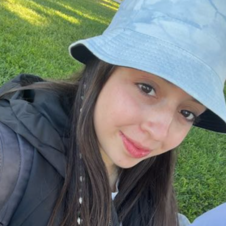

Mi amor, Jeraldy,
Gracias por llenar mis días de risas, calma y cariño. Contigo todo es más bonito, y cada momento a tu lado se convierte en mi recuerdo favorito.
Te quiero hoy, mañana y todos los días que vienen.
Con todo mi amor,
Camilo